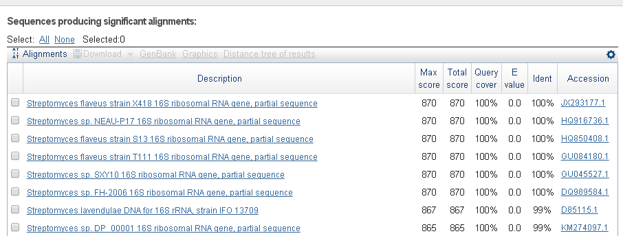

Định danh theo bằng chứng và đọc ứng dụng
Slide 12 và bài đọc tuần 13–16 · Kiểu hình, trình tự và ứng dụng · 8 trắc nghiệm và 1 tự luận
Bắt đầu học ↓Học buổi rút gọn · đọc hình và làm 10 câu · Học trọn chương và làm bộ 80 trắc nghiệm, 15 tự luận
Sau buổi này
- Đọc bằng chứng hình thái, sinh hóa và trình tự theo chất lượng và độ phân giải.
- Giải thích độ phủ so với độ tương đồng của một kết quả so khớp.
- Phân biệt sản phẩm chính trong protein đơn bào và lên men ethanol.
Gợi nhớ · 5 phút
Hình cầu, màu Gram tím và một phép thử sinh hóa có đủ để gọi tên loài không? Nêu thêm một bằng chứng và giới hạn của nó.
Đọc hình và nắm kiến thức · 20 phút
Quan sát hình minh họa

Trích bảng kết quả từ bài giảng. Hai cột Query cover và Ident nằm cạnh các thông số căn chỉnh.
Quan sát · Khoanh cột Query cover và cột Ident rồi tìm hai dòng đầu có cùng hai giá trị.
Dự đoán · Hai dòng cùng độ phủ và độ giống có đủ để chọn một nhãn loài duy nhất không?
Mở giải thích sau khi dự đoán
Các chỉ số ngang nhau ở chỉ dấu đang đọc chưa tách được ứng viên. Cần kiểm đoạn căn chỉnh, thư viện tham chiếu và bằng chứng có độ phân giải loài.
- Kiểu hình
Sàng lọc theo một tập quan sát có đối chứng.
- So khớp chỉ dấu
Đọc độ phủ, độ tương đồng và các ứng viên sát nhau.
- Mức kết luận
Chọn bậc phân loại được nhiều dữ kiện ủng hộ.
Kiểm tra các dòng bằng chứng trước khi gọi tên.
| Ứng dụng | Sản phẩm mục tiêu | Bằng chứng cần đọc |
|---|---|---|
| Protein đơn bào | Sinh khối giàu protein | Sinh khối và hàm lượng protein |
| Lên men rượu | Ethanol | Hàm lượng ethanol hoặc sản lượng trên cơ chất |
| Ví dụ penicillin | Một sản phẩm chuyển hóa | Tính chất hoặc phép định lượng của chất mục tiêu |
Theo dõi đầu ra quan trọng đối với mục tiêu công nghệ.
Đọc hình để tự rút ra cơ chế
Quan sát · Hai kết quả so khớp có cùng tỷ lệ tương đồng. Kết quả X bao phủ gần hết đoạn chỉ thị, còn Y chỉ bao phủ một đoạn ngắn.
Dự đoán · Thông tin nào làm X đáng xem xét hơn, và điều gì vẫn còn phải kiểm trước khi gán nhãn?
Mở giải thích sau khi dự đoán
Độ bao phủ cao của cùng một đoạn chỉ thị khiến kết quả X có cơ sở hơn để so. Vẫn cần xem chất lượng và khả năng phân biệt của chỉ thị, cùng độ tin cậy của nguồn tham chiếu.
Kiểu hình và phân loại
Hình thái khuẩn lạc và tế bào, màu Gram, tín hiệu sinh hóa là các bằng chứng có thể kết hợp. Định danh là so một mẫu với nhóm tham chiếu. Phân loại còn tổ chức các nhóm và quan hệ giữa chúng.
Đọc chỉ dấu phân tử
Chỉ dấu 16S rRNA thường dùng để so sánh vi khuẩn và Archaea. Vùng bảo thủ giúp so sánh các trình tự đồng dạng, còn vùng biến đổi tạo thông tin phân biệt. Độ tương đồng trên đoạn căn chỉnh và tỷ lệ trình tự truy vấn được phủ trả lời hai câu hỏi khác nhau.
Dữ kiện hội tụ và giới hạn
Tham chiếu gần nhau có thể cho chỉ dấu rất giống nhau. Cần kiểm chứng nguồn gốc mẫu, chất lượng trình tự và thư viện tham chiếu. Nếu nhiều ứng viên gần như ngang nhau, báo cáo ở bậc phân loại có đủ bằng chứng rồi nêu phép so sánh bổ sung cần thiết.
Cơ chế chung và đầu ra
Protein đơn bào khai thác sinh khối vi sinh vật giàu protein. Với lên men rượu, ethanol là sản phẩm chuyển hóa ngoài sinh khối, và việc tái tạo NAD⁺ giúp đường phân tiếp diễn. Tài liệu tuần 16 bổ sung một góc nhìn khác về sản phẩm chuyển hóa qua ví dụ penicillin.
Liên hệ thực tế
Trong hồ sơ nghiên cứu, bảng so khớp chỉ dấu mô tả các ứng viên gần nhất. Hồ sơ chất lượng quá trình bổ sung các phép đo khác tùy mục tiêu, như hàm lượng protein hoặc ethanol.
Tự kiểm · 25 phút
Một báo cáo định danh và hai hồ sơ sản phẩm
Mẫu U là một mẫu minh họa. Kết quả kiểu hình phù hợp cả G1 và G2, hai nhóm ứng viên trong cùng chi G. Bảng trình bày kết quả so khớp chỉ dấu. Hồ sơ P theo dõi sinh khối cùng hàm lượng protein, hồ sơ Q theo dõi lượng ethanol trong dịch.
| Ứng viên | Độ tương đồng trên vùng khớp | Độ phủ truy vấn |
|---|---|---|
| G1 | 99,6% | 98% |
| G2 | 99,6% | 98% |
| H1 | 100% | 12% |
Đối chiếu và hẹn ôn · 10 phút
Chọn một chỗ còn phân vân. Giải thích lại bằng lời của mình rồi thử một câu cùng dạng.
Mở đáp án và giải thích · VSV-06
Xem trong bộ bài tập của chủ đề
Học tiếp theo slide